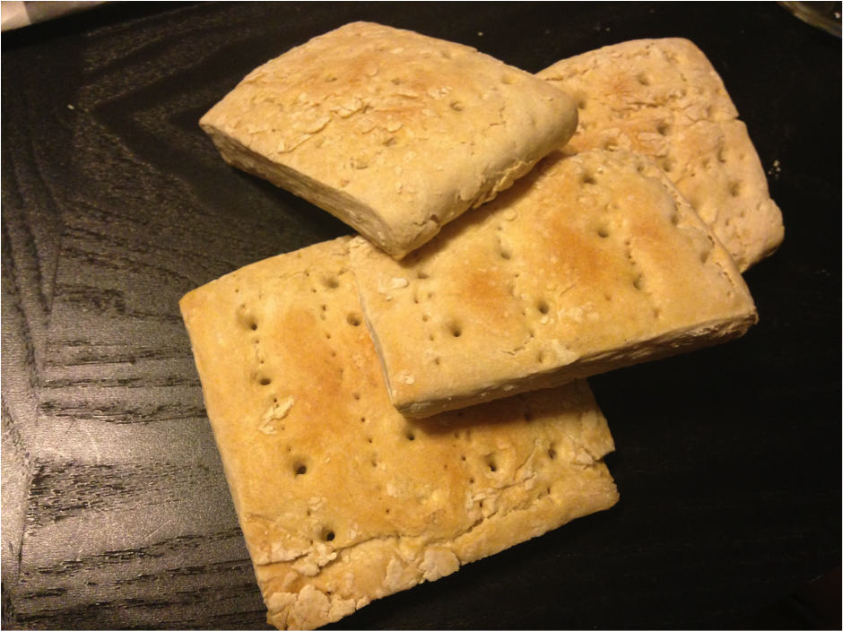
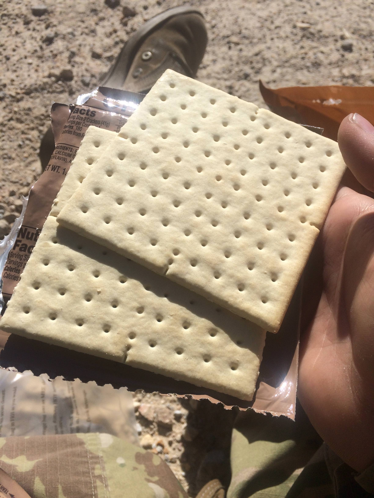
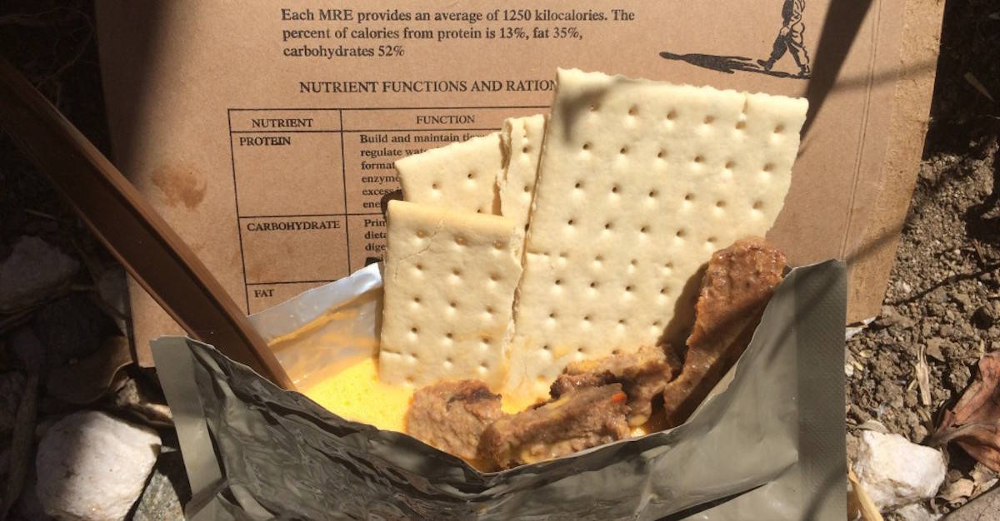
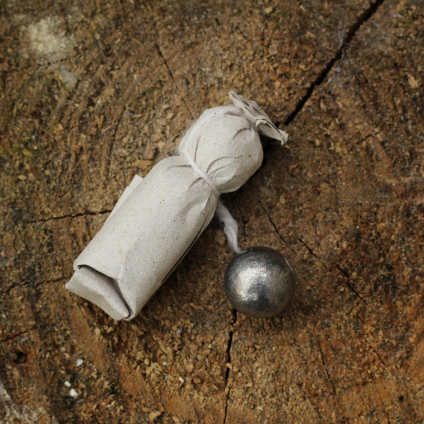
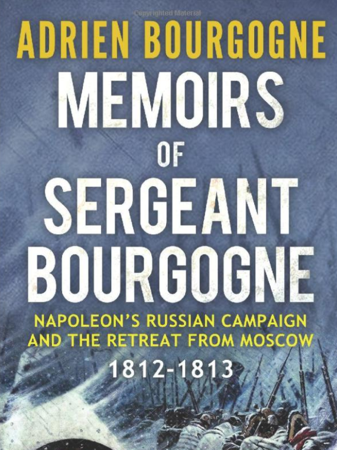

욕망의 무게 - 배낭과 수레
게시: 2021-05-10T06:30:54+09:00
모스크바를 떠나는 그랑다르메의 모습에서 눈에 확 들어오는 것은 사람과 말의 대조적인 모습이었습니다. 병사들의 혈색이 붉그스레 건강해 보이는 것에 비해, 마차와 포가를 끄는 말들의 모습은 눈에 띄게 마르고 병약해보였습니다. 보로디노 전투에서 특히 기병대의 손실이 컸을 뿐만 아니라 원정 내내 고질적이던 사료 부족 문제가 모스크바에서도 해결되지 않았기 때문이었습니다. 문제는 그 뿐만이 아니었습니다. 마차와 수레가 너무 많았습니다. 포병대에 딸린 포가와 탄약 수송차, 그리고 대대마다 딸린 솥단지와 머스켓 탄약포 등의 짐을 실은 마차 등 규정된 군용 마차 외에 어중이떠중이 민간용 마차와 수레가 최저 1만5천대에서 최대 4만대까지 따라나섰던 것입니다. 총병력수가 10만도 안되는데 마차와 수레가 이렇게 많다는 것은 확실히 비정상이었습니다. 물론 이것들 중 상당수는 장교들과 병사들이 그동안의 약탈품을 싣고 오느라 마련한 것들이었습니다. 이런 마차들은 그들이 따로 재주껏 마련한 체구가 작은 코사크 말들이 끌었습니다. 그런 약탈품을 싣기 위해 귀족가의 화려한 마차부터 심지어 유모차까지 온갖 종류의 수레가 다 동원되었습니다. 물론 말이 부족했기 때문에 손수레 등도 많이 동원되었는데 그런 것들을 끄는 것은 주로 러시아 민간인들이었습니다. 이런 러시아인들은 말 대신 강제로 짐을 끌도록 프랑스 병사들이 협박하여 징발(?)한 사람들이었습니다. 거기에 프랑스군과 함께 따라나서려는 모스크바 거주 프랑스 및 독일 등 외국인들과 그 가족들이 타고 나온 마차들도 많았습니다. 젊은 장교 드 메일리는 어떤 프랑스 상인 가족이 화려한 차림으로 마차를 타고 나오는 모습과 옷차림이 마치 근교로 소풍을 나오는 파리 부르조아 가족의 모습 같았다고 적었습니다. 그래서 많은 장교들은 모스크바를 나서서 행군하는 그랑다르메의 모습을 트로이에서 돌아오는 그리스군, 혹은 카르타고에서 돌아오는 로마군으로 비유했고 어떤 이는 성공적인 약탈을 마치고 돌아오는 타타르족의 군대에 비유하기도 했습니다. 드 메일리는 이 군대의 모습에서 연상되는 표현은 '영광스럽다'(glorieuse)보다는 '짭짤하다'(lucrative)라는 단어라고 꼬집었습니다. 모든 병사들이 마차와 말을 마련할 정도로 수완이 좋았던 것은 아니었고 또 노략품을 챙기느라 부대를 이탈할 정도로 노략품이 많았던 것은 아니었습니다. 그런 대다수의 착한(?) 병사들도 결코 배낭이 가볍지는 않았습니다. 훗날 살아 돌아가 회고록을 썼던 근위대 소속 부르고뉴(Adrien Bourgogne) 하사가 모스크바를 출발할 때 그의 배낭 속에는 아래와 같은 것들이 들어 있었습니다.

(Biscuit 또는 hardtack이라고 불린 건빵은 고대 로마군단 때부터 현대 미군까지 병사들의 배낭 속에 필수적으로 들어있던 주식이었습니다.)
 
(현대 미군 전투 식량 MRE 속에 들어있는 건빵, cracker입니다. 정말 성분과 맛, 모양 등이 거의 변하지 않았습니다. 바뀐 점이 있다면 나폴레옹의 병사들과는 달리 현대 미군 건빵은 매우 얇아졌고 꼭 땅콩 버터가 곁들여진다는 것 정도입니다.) . 설탕 몇 파운드 . 쌀 약간 . 단단한 건빵 . 증류주 반병 . 금실과 은실로 수놓은 중국제 비단옷 . 금 및 은으로 된 작은 소품 몇개 . 여성용 승마 코트 . 양각 새김을 한 은으로 된 장식판 2개 . 메달 몇개 . 다이아몬드가 박힌 러시아 장식품 하나 . 그의 정복 유니폼 . 예비용 군화 1켤레 그 외에도 어깨에 둘러매는 잡낭에는 이런 것이 들어 있었습니다. . 예수님을 새긴 은메달 하나 . 중국제 도자기 꽃병 하나 이것 말고도 당연히 그의 머스켓 소총과 총검, 그리고 60발의 탄약포가 그의 짐이었습니다.

(당시 탄약포는 기름 또는 파라핀을 바른 질긴 종이에 약 29g의 탄약과 약 8g의 흑색화약을 묶은 것입니다. 이것도 60발을 합하면 약 2.2kg 정도네요.)
(당시 탄약포는 기름 또는 파라핀을 바른 질긴 종이에 약 25.5g의 납탄과 약 110~120g 정도의 흑색화약을 묶은 것입니다. 별 것 아닌 것 같지만 이것도 60발을 합하면 8~9kg 정도가 됩니다. M16 소총 거의 2정의 무게입니다.)
(취소선을 그은 윗 문장은 제가 grain이라는 단위를 gram으로 착각해서 적은 것입니다. 김한솔님 댓글 보고 알았습니다. 고맙습니다.)

(부르고뉴 하사는 신참 근위대 소속이었습니다. 그도 회고록을 쓸 자격이 충분히 있었지요. 저는 아직 못 읽어보았습니다.)
이렇게 무거운 짐을 지고도 모스크바 성문을 나서는 부르고뉴 하사의 기분은 날아갈 것 같았습니다. 이렇게 든든히 한몫 챙겨서 고향으로 돌아가는 길이었으니까요. 그러나 중력은 매우 훌륭한 선생님이었습니다. 몇 마일을 걷고나니 부르고뉴 하사도 생각이 좀 바뀌어 이렇게 무거운 배낭을 매고 파리까지 간다는 것은 도저히 불가능하다는 판단을 했습니다. 몇 마일을 걸은 뒤 주어진 첫번째 휴식 시간 때, 길가에 주저앉은 부르고뉴 하사는 배낭을 풀어 어떤 짐을 버릴지 한창을 고민했습니다. 부르고뉴 하사는 결코 신병이 아니었고 근위대 하사관에 오를 정도로 많은 전투와 원정을 겪은 고참이었습니다. 그런 고참도 재물 욕심 앞에서는 눈이 멀기 마련이었습니다. 고민하던 그가 버린 것은 딱 하나, 그의 정복 유니폼의 바지였습니다. 부르고뉴 하사가 정복 바지를 내버릴 때, 옆에서는 다른 병사들이 탄약포 몇십발과 머스켓 소총 청소도구를 내버렸습니다. 그리고 포병대에서는 무쇠 대포알을 내던졌고 수송대 마차에서는 예비용 편자와 무거운 무쇠 모루를 버렸습니다. 무거운 배낭을 짊어지고 가던 병사들만 짐을 내버리기 시작한 것이 아니었습니다. 이미 약탈품으로 과적 상태이던 마차들을 기다리고 있던 것은 울퉁불퉁한 러시아의 도로와 허술하기 짝이 없는 통나무 다리였습니다. 비탈길이나 다리, 도랑 등을 만날 때마다 마차 바퀴살이나 차축이 부러지고 길이 막혔습니다. 이런 난장판 속에서 서로 먼저 가겠다며 서로 다른 언어를 쓰는 병사들끼리 멱살잡이와 주먹질은 물론 총검과 군도가 동원되기도 했습니다. 그러면서 결국 필연적으로 많은 수레와 마차가 버려졌습니다. 곧 그랑다르메가 행군하는 길가에는 병사들이 버린 짐과 마차들이 보기 흉하게 널리기 시작했습니다. 이렇게 보기 흉하게 길가에 버려진 차량들과 물건들, 그리고 잦은 교통 체증은 군대의 사기에 좋지 않은 영향을 주었습니다. 그러나 병사들의 사기에 그보다 더 심각한 영향을 준 것은 병사들의 배낭과 짐마차 속에 든 약탈물 그 자체였습니다. 병사들이 더 이상 전투와 승리보다는 어서 빨리 고향으로 돌아가 이 약탈물을 처분할 생각에 들떠 있다는 것은 이 거대한 집단이 더 이상 유기적인 하나의 그랑다르메가 아니라 각자의 욕망으로 분열된 오합지졸에 더 가까와졌다는 뜻이었기 때문입니다. 다행인 것은 그랑다르메가 모스크바 성문을 줄줄이 빠져나오던 10월 19일만 하더라도 아직 날씨가 온화했다는 것입니다. 모스크바 외곽 수km 밖에서 나폴레옹이 길가에 서 있는 모습을 발견한 랍(Jean Rapp) 장군은 반갑게 다가가 인사를 나누며 겨울 날씨 걱정을 했습니다. 그에 대해 나폴레옹은 "날씨가 이렇게 좋은 것을 보라, 아직도 내가 행운의 별을 타고난 것을 모르는가?"라고 말했습니다. 그러나 랍은 이 말에서 허세를 느꼈습니다. 왜냐하면 인간의 의사 소통에서 문장이 차지하는 비중은 7%에 불과하다고, 그렇게 말하는 나폴레옹의 얼굴은 수심으로 가득차 있었기 때문이었습니다.
(인간의 소통에 있어 문장 자체는 7%의 비중을 차지할 뿐이고, 38%는 음성, 억양 등이며, 55%는 손짓이나 표정 등의 바디 랭귀지라고 합니다.) 그나마 날씨조차 행운의 별 운운하며 날씨 설레발을 떤 나폴레옹의 편이 아니었습니다. 모스크바를 떠난지 사흘째 되던 날, 아직 추위는 아니었지만 하늘이 갈라진 듯 폭우가 내렸습니다. 악명 높은 러시아의 도로는 곧장 진흙 바다로 변했습니다. 더 많은 말들이 지쳐 쓰러졌고, 더 많은 차량이 길가에 버려졌으며 더 많은 물건들이 병사들의 배낭에서 나와 길바닥에 내팽개쳐졌습니다. 무엇보다 큰 문제는 시간이 지체되고 있다는 것이었습니다. 11월 1일까지는 아니더라도 2일 또는 3일에는 일단 스몰렌스크에 도착해야 했는데, 무거운 배낭과 거추장스러운 과적 차량들, 그리고 진흙뻘이 되어버린 도로 때문에 행군 속도가 점점 떨어지고 있었습니다. 게다가, 이들은 현재 스몰렌스크에 점점 가까와지는 것이 아니라 점점 멀어지고 있었습니다. 기억하시겠습니다만 이들은 지금 타루티노에 진을 친 쿠투조프의 러시아군을 향해 진격 중이었습니다. 여태까지 제 블로그를 읽으신 분들은 다들 명확하게 이해하시겠습니다만 나폴레옹이 유럽 대륙을 정복할 수 있었던 전술상의 특징을 꼽으라고 하면 그건 바로 탁월한 기동력이었습니다. 결코 압도적인 포병 전력이나 뛰어난 사격 솜씨가 아니었습니다. 그런데 이렇게 전술적인 최대 장점을 상실한 상태에서 과연 러시아군을 격파할 수 있었을까요? 그를 예상하기 위해서는 타루티노의 러시아군이 나폴레옹의 움직임을 잘 알고 있었는지가 매우 중요합니다. 러시아군은 잘 알고 있었습니다. 그런데 상대는 쿠투조프였습니다. 쿠투조프는 절대 우리의 예상대로 움직이지 않았습니다. Source : 1812 Napoleon's Fatal March on Moscow by Adam Zamoyski
www.lifesize.com/en/blog/speaking-without-words/
www.wearethemighty.com/lists/9-recipes-to-make-your-mres-actually-taste-good/
www.amazon.com/Sergeant-Bourgogne-Napoleons-Imperial-campaign/dp/1846771064
www.quora.com/How-much-gunpowder-does-it-take-to-fire-a-musket
capandball.com/69-ball-buck-and-ball-and-buckshot-cartridges-of-the-u-s-army/